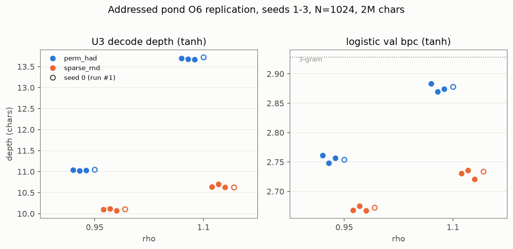

Addressable Storage Without Usability: A Permutation-Recurrence ESN Decodes Deeper and Predicts Worse
download whitepaper (pdf)
- registered 2026-08-10
- run ledger #1–#2, #5–#6
- 4 seeds, 12/12 strict inequalities
- replicated before publication
- promoted 2026-08-11
Abstract
We compare a reservoir designed for addressed storage — an echo state network whose recurrence is a single random permutation, W = ρ·P, with Hadamard-coded inputs — against a sparse random-mixing echo state network on identical text, identical readouts and identical protocol. The addressed-memory network stores history strictly deeper (its past is linearly decodable further back) and predicts the next character strictly worse, in all four seeds tested, at both spectral radii, 12/12 strict inequalities on replication. The gap grows with spectral radius: depth +0.9 → +3.0 characters, prediction cost +0.07 → +0.15 bits. A follow-up shows the failure is structural: supplying the readout with explicit linear unbinding features for every addressed slot is a readout reparametrization and cannot help even in principle — the gap survives (0.081 → 0.091 at ρ=0.95). A crossover sweep locates where the trade inverts: below ρ* ≈ 0.72 the pure delay line is the more usable arm. Storing information and using it are separable properties, dissociated here by construction.
Keywords reservoir computing · echo state networks · permutation recurrence · holographic reduced representations · decodability vs. usability · pre-registration
§1 Introduction
The program's reference reservoir is an echo state network with N = 1024 fixed random tanh units and sparse random recurrence, read over text one character at a time — a reservoir computer in the classical echo-state sense [1][2][3]. The recurrent weights are never trained; only a small readout on top of the state is. Such a reservoir mixes: every step distributes the incoming character across a shared, entangled state.
An alternative is to make the recurrence address its storage rather than mix it. Replace the mixing matrix with W = ρ·P, where P is a single random 1024-cycle permutation: the state no longer mixes but rotates, each step advancing the whole stored history one addressed slot along the cycle. The inputs are given Hadamard codes — 27 exactly orthogonal input columns (scaled 1/√3), one per character — so that successive writes do not interfere: the permutation-and-superposition storage scheme of holographic reduced representations [4] and hyperdimensional computing [5], built into the recurrence itself. We refer to this construction as the addressed-memory ESN: the character seen j steps ago occupies slot j of the cycle, undisturbed. Whether such organized storage helps a trained readout is the question this study tests.
Two instruments are used, and the finding lives in their disagreement:
- Decode depth (U3 in the program's internal instrument numbering): how many characters back a ridge probe can still recover from the state — the interpolated 50%-accuracy crossing over lags 1–32.
- Usability: validation bits per character (bpc) of the standard logistic readout predicting the next character. Lower is better. For scale on these splits: uniform guessing 4.7549, 3-gram 2.9279, 5-gram 2.1585.
§2 Method
The study is a single registered 2×2(×2) factorial of 24 cells: recurrence
W ∈ {perm: ρ·P; sparse: fanin-10 random,
rescaled to spectral radius ρ} × input coding Win ∈ {had:
Hadamard; rnd: uniform random} × activation {tanh, linear}, with
tanh evaluated at ρ ∈ {0.6, 0.95, 1.1}. Data: 2M training / 500k validation /
500k test characters of text8 [6], washout 200. In the short labels used in
the tables below, perm_had denotes the addressed-memory ESN
(permutation recurrence with Hadamard input coding) and sparse_rnd
the sparse random-mixing control. One structural
property is worth stating: a permutation is norm-preserving, so the
addressed-memory arm remains stable at ρ > 1, beyond the spectral
radius at which mixing reservoirs normally lose the echo state property.
§3 Pre-registered predictions
Six ordinal predictions and four quantitative bands were committed before the run, with wording finalized after a disclosed 100k-character pilot run — a disclosure the registration protocol requires. The headline prediction, O6: the addressed-memory ESN would be both strictly deeper on decode depth and strictly worse on logistic bpc than the sparse-mixing reservoir at ρ ∈ {0.95, 1.1} — the claim that addressable storage is bought at the cost of mixing, stated as a conjunction so that either half failing would break it.
Because O6 was a surprising claim, the program's standing rules held it provisional until a registered replication on seeds 1–3: 6 cell-pairs, 12 strict inequalities, with the falsifiers named in writing before the rerun — any depth inequality breaking would demote the claim to an open question; any bpc inequality breaking with the depth ordering intact would half-falsify it; both breaking would record seed 0 as a candidate outlier. 12/12 was the only outcome permitted to promote the finding to the program's confirmed-findings record.
§4 Results
Run #1 (seed 0): 6/6 ordinal predictions confirmed, 4/4 quantitative bands confirmed. The registered headline, in numbers:
| ρ | depth perm_had | depth sparse_rnd | bpc perm_had | bpc sparse_rnd |
|---|---|---|---|---|
| 0.95 | 11.05 | 10.11 | 2.7538 | 2.6727 |
| 1.1 | 13.72 | 10.63 | 2.8779 | 2.7337 |
Deeper in the left-hand columns, worse in the right-hand columns, at both radii — and the depth gap along the W axis grows with ρ (roughly +0.4 → +1.0 → +3.2 characters across ρ = 0.6 / 0.95 / 1.1), with no collapse of the addressed arm near the stability boundary. The replication, seeds 1–3:
| seed | ρ | depth: perm > sparse | bpc: perm > sparse |
|---|---|---|---|
| 1 | 0.95 | 11.04 > 10.10 | 2.7613 > 2.6681 |
| 1 | 1.1 | 13.70 > 10.64 | 2.8833 > 2.7303 |
| 2 | 0.95 | 11.02 > 10.12 | 2.7480 > 2.6751 |
| 2 | 1.1 | 13.68 > 10.70 | 2.8699 > 2.7360 |
| 3 | 0.95 | 11.03 > 10.07 | 2.7565 > 2.6671 |
| 3 | 1.1 | 13.67 > 10.63 | 2.8744 > 2.7209 |
The seed-to-seed spread is notably small: across four seeds the addressed-memory ESN's depth spans 11.02–11.05 at ρ=0.95 and 13.67–13.72 at 1.1 — a spread of ≤ 0.05 characters, roughly half a percent of the gap under test. A plausible explanation is that a random N-cycle is the same object up to relabeling, so the decode depth of an addressed-memory ESN is essentially deterministic in the seed.

perm_had (addressed-memory ESN); orange:
sparse_rnd (sparse random mixing); filled markers: seeds 1–3;
hollow: seed 0 (run #1). At both ρ the addressed-memory ESN decodes deeper
in the left panel and predicts worse in the right panel in every seed — the 12/12
strict inequalities of Table 2.Can the extra depth be made usable by explicit unbinding? A natural objection is that the readout cannot address the stored slots directly. We therefore supplied the addresses explicitly — features [x ‖ P⁻¹x ‖ … ‖ P⁻⁴x], the state unbound in the holographic-representation sense [4] by the reservoir's own permutation cycle. The registered analysis established this to be vacuous before the run: each appended block is a fixed coordinate permutation of x, so the widened features span exactly the raw state's linear function class — a linear readout already realizes every fixed permutation of its input. The run confirmed the observable consequence: ridge validation bpc identical to four decimal places in every arm, and the permutation−sparse logistic gap survived, 0.0811 → 0.0906 at ρ=0.95 and 0.1443 → 0.1484 at ρ=1.1. Linear unbinding cannot recover the stored depth even in principle. (A nonlinear decoder is a named, not-yet-run follow-up.)
Where the trade inverts. A registered low-ρ sweep (seed 0, random input coding in both arms, isolating the W axis) measured the gap function gap(ρ) = sparse − perm logistic validation bpc (positive = the permutation delay line is the more usable arm):
| ρ | perm_rnd bpc | sparse_rnd bpc | gap | winner |
|---|---|---|---|---|
| 0.3 | 2.8969 | 2.9028 | +0.0059 | delay line |
| 0.45 | 2.7758 | 2.7865 | +0.0107 | delay line |
| 0.6 | 2.6843 | 2.6989 | +0.0146 | delay line |
| ρ* = 0.7227 | — | — | 0 | crossover |
| 0.8 | 2.6611 | 2.6519 | −0.0092 | mixing |
| 0.95 | 2.7353 | 2.6727 | −0.0626 | mixing |
Below ρ* ≈ 0.72 the pure delay line is the more usable arm; above it, mixing wins and the cost of the permutation grows. The storage ordering — the addressed-memory ESN decodes deeper — held at every ρ tested, 0.3 through 1.1. Both architectures have their bpc optimum near ρ=0.8, just above the crossover: at the operating point where these reservoirs predict best, addressed storage and mixing are nearly equivalent, and they separate only away from it — mixing degrades gracefully, while the delay line collapses.
§5 Discussion
Storing information and using it are separable properties, and here the trade is imposed by construction: the permutation buys addressable, collision-free storage at the cost of nonlinear mixing, and the readout pays for the missing mixing in bits. The limitation is structural rather than a missing tool — supplying explicit unbinding features does not help, because applying a fixed permutation is an operation a linear readout already performs implicitly. What the prediction readout requires is not deep, linearly decodable storage but the computed, entangled summaries that mixing produces. Decodability is not usability.
One qualification remains open: only linear unbinding is ruled out. Whether an inexpensive nonlinear decoder can convert the stored depth into predictive performance is a named open question in the program's queue, and no claim is made about it here.
§6 References
- H. Jaeger, "The 'echo state' approach to analysing and training recurrent neural networks," GMD Report 148, German National Research Center for Information Technology, 2001.
- W. Maass, T. Natschläger, H. Markram, "Real-time computing without stable states: a new framework for neural computation based on perturbations," Neural Computation 14(11), 2002.
- M. Lukoševičius, H. Jaeger, "Reservoir computing approaches to recurrent neural network training," Computer Science Review 3(3), 2009.
- T. A. Plate, "Holographic reduced representations," IEEE Transactions on Neural Networks 6(3), 1995.
- P. Kanerva, "Hyperdimensional computing: an introduction to computing in distributed representation with high-dimensional random vectors," Cognitive Computation 1(2), 2009.
- M. Mahoney, "Large text compression benchmark" (text8), mattmahoney.net/dc/textdata.
§7 Provenance
- 169b7c2d —
2026-08-10-addressed-pond: main factorial, 24 cells, seed 0 (run ledger #1). Registered before running; all six ordinal predictions and four quantitative bands confirmed. - 866d975e —
2026-08-11-addressed-seeds-replication: seeds 1–3, 12 cells (run ledger #2). 12/12 strict inequalities; promoted by the pre-stated rule. - 472d4fb7 —
2026-08-11-addressed-unbinding-readout: the linear unbinding test, seed 0 (run ledger #5). Null registered in advance and confirmed; this line of inquiry closed. - 4052cdec —
2026-08-11-addressed-low-rho-crossover: the crossover sweep, seed 0 (run ledger #6). Single-seed measured context, labeled as such.
All experiments registered before running, with named falsifiers. Headline claim tested on 4 seeds (0–3); replicated before publication. Unbinding and crossover results are single-seed and presented as supporting structure, not as the promoted claim. Internal designation: addressed pond.